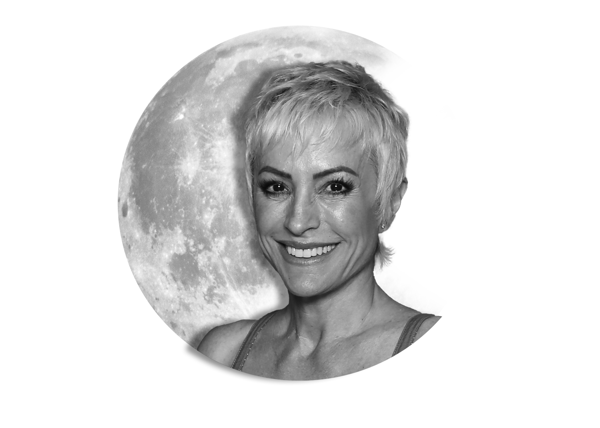

Engage in a dynamic discussion you won't get anywhere else
Explore Beyond Borders
Break through barriers and discover a universe beyond
Inspire the Next Generation
Pave the way for new innovation to take place in a brand new world
Connect with Professionals
Share knowledge and spread intelligence across like-minded individuals
Lt Gen. Larry D. James, USAF (Ret.)
Deputy Director, NASA Jet Propulsion Laboratory
Dr. Andrew Aldrin, PhD.
Program Coordinator, Master of Space Operations Program at Embry Riddle University
Haley McClain Hill
CEO and Entrepreneur, Former NFL Cheerleader and USAF Veteran

Nana Visitor
Actor, Star Trek: Deep Space Nine
Dr. Jason Womack, PhD.
Cheif of USSF Development Branch
Dr. Christopher Schell, PhD.
Ecologist, Assistant Professor at University of California Berkeley
Col Peter S. Ford, USAF (Ret.)
Head of Federal Operations, QuSecure Inc.
Col Charlie McGillis, USAF (Ret.)
Founder & CEO 2 Polaris & Beyond, LLC
Nathan Schwaggler
Design and Innovation Facilitator, US Space Command
Lt Gen. Larry D. James (Ret.) Deputy Director, NASA Jet Propulsion Laboratory
Larry D. James has served as Deputy Director and Chief Operating Officer since 2013.
As the Laboratory's Chief Operating Officer, he is responsible for the day-to-day management of JPL's
resources and activities. This includes managing the Laboratory's solar system exploration, Mars,
astronomy, physics, Earth science, interplanetary network programs, and all business operations. These
activities employ 6,000 scientists, engineers, technicians, and business support personnel,
generating $2.6 billion in annual revenues.
Prior to his retirement from active duty in 2013, Lt. Gen. James was the Air Force Deputy Chief of Staff
for Intelligence, Surveillance and Reconnaissance at the Pentagon. He was responsible to the Secretary and
Chief of Staff of the Air Force for policy formulation, planning, evaluation, oversight, and leadership of
Air Force intelligence, surveillance and reconnaissance capabilities and led more than 20,000 Intelligence,
Surveillance and Reconnaissance officers, enlisted and civilians across the Air Force ISR Enterprise.
Lt. Gen. James received his Bachelor of Science in Astronautical Engineering (1978) from the US Air Force
Academy (Distinguished Graduate) and his Master of Science in Aeronautics and Astronautics (1983) from the
Massachusetts Institute of Technology in Cambridge, MA. He was also a Draper Fellow at the Charles Stark
Draper Laboratory in Cambridge, MA.
Dr. Andrew Aldrin, PhD. Program Coordinator, Master of Space Operations Program at Embry Riddle University
Dr. Andrew Aldrin is President of the Aldrin Family Foundation, a charitable organization
dedicated to harnessing the inspiration of space to ignite a passion for STEAM education in students of all ages and
backgrounds. He has served in leadership roles in this organization since 2014, during which time he has overseen the
extension of educational programs to over 300 elementary schools and universities.
Dr. Aldrin is also the Program Coordinator of the Masters of Space Operations at Embry Riddle Aeronautical University.
Previously he was the Director of the ISU Center for Space Entrepreneurship at Florida Tech and an Associate Professor
of Engineering Management at Florida Tech. Before moving into academia, Dr. Aldrin had a distinguished career in industry
and government research, including executive positions at Boeing, United Launch Alliance and Moon Express.
Dr. Aldrin was also a member of the research staff at the RAND Corporation and the Institute for Defense Analyses. He
serves on the board of several charitable organizations, including The Secure World Foundation, Sea Space Symposium,
and the Tau Zero Foundation. He holds a Ph.D. from UCLA in Political Science, an MBA from TRIUM (NYU, LSE, HEC), and an
MA from George Washington University in Science, Technology and Public Policy.
Haley McClain Hill CEO and Entrepreneur, Former NFL Cheerleader and USAF Veteran
Haley McClain Hill is a Season 15 Shark Tank entrepreneur, 2x former NFL Cheerleader, and United States Air Force Veteran.
Her 2 companies TORCH Warriorwear & Seek and Set Free have partnered with brands such as AAFES, The Atlanta Falcons Cheerleaders, and The 49ers Gold Rush Cheerleading Team.
She won both the 2022 Veteran Shark Tank Pitch Competition and the 2023 Founders Live Minnesota Pitch Competition.
She has been invited to speak at multiple military focused events such as The NYC USO's Fleet Week, Military Influencer Conference, and The Joint Women's Leadership Symposium.
She has cheered at 100+ NFL and collegiate football games and gives back to the cheer and dance space by offering workshops at universities, coaching youth teams, and creating pro cheerleading team retreats.
She's advised startup fashion brand companies, led over 300+ airmen while she was a 1st Lieutenant in the Air Force, and even has appeared on the game show "Beat Shazaam"!
She believes in living a life full of love, creativity and authenticity - inspiring and coaching others to live their dream lives!
Nana Visitor Actor, Star Trek: Deep Space Nine
Nana has worked as an actor for 49 years. She has performed on Broadway, in film
and on TV. She is best known for the seven years she played Major Kira on Star Trek: Deep Space 9. A
traumatic event while filming DS9 split her life in two: the part that automatically functioned as a
mother and actor, and the part that remained isolated and locked in Post Traumatic Stress Disorder.
It was more than 20 years before she found a doctor whose treatment included teaching her about the
science based information that MRIs have relatively recently revealed about how our brains and nervous
systems function. Not only did this heal her, but led to Post Traumatic Growth. It changed her
intrinsically, and her experience of being human. Nana is especially interested in opening a channel
to others who may not have had the time or the opportunity to learn what she believes everyone needs to
know. With just a little understanding of how we humans function, we can have greater control over ourselves
in demanding situations, and free our energies to focus them on the jobs we have at hand, not on managing
stress. She has written a book about the experiences of the women of Star Trek in the show's 5 decades,
and their impact on the culture. She discovered, while conducting interviews for the book with people at
NASA and ESA, just how many people were inspired to work in space programs by Star Trek. OPEN A CHANNEL
is being published in October. She is proud of her online community on Instagram, @visitornana, where
she is "Mama Nana" and shares what she has learned, through life experience and science, about being human.
She is also proud of son Buster, a medically retired Marine, and her son Django, a musician. Nana lives
in Los Angeles with her husband Matthew Rimmer and an assortment of animals.
Dr. Jason Womack, PhD. Chief of USSF Development Branch
Dr. Jason Womack is the Branch Chief of Development for the United States Space Force.
With a passion for the human domain of leadership and team dynamics, Jason has dedicated his career to empowering
individuals and guiding teams.
He earned his doctorate from the University of Southern California in Organizational
Change and Leadership. As a leader, JW fosters a culture of self-leadership and high-performance teams. He leads by
example, inspiring individuals to embrace personal accountability and ownership in their professional growth.
Jason's expertise is leveraging the human element to achieve exceptional results in complex environments, ensuring
teams are motivated, engaged, and equipped to overcome challenges. With a keen understanding of human behavior and
motivation, he has developed strategies and programs that empower individuals to take charge of their personal and
professional development.
Jason creates workshops, mentoring programs, and coaching programs, equipping
people with the mindset and tools to excel in their roles. He believes in the power of continuous learning and
personal growth. His future goals include expanding his reach into influencing a broader audience and developing innovative
approaches to foster connections and build high-performance work cultures.
Dr. Christopher Schell, PhD. Ecologist, Assistant Professor at University of California Berkeley
Dr. Christopher J. Schell is an urban ecologist, professor, Afrofuturist, father, and writer.
Schell's research sits at the intersection of animal behavior, physiology, urban biodiversity conservation, environmental
justice, and One Health to investigate how carnivores, namely coyotes, foxes, and raccoons, adapt to life in cities.
In addition, Schell's lab integrates critical discourses on how structural oppression (e.g., redlining, pollution burden,
and socioeconomic disparities) directly shape the very urban features associated with human-wildlife interactions, conflict,
and adaptation. This transdisciplinary work aims to disentangle how environmental injustices have structured our urban
ecosystems and how we can harness those lessons to build more just, biodiverse, and resilient cities. Schell is a National
Geographic Explorer, Grist Fixer, Cal Academy Fellow and Board Member, and Affiliate Faculty with the Museum of Vertebrate
Zoology, with his work featured in The Atlantic, The New York Times, Vox Explained, and various NPR radio events.
Since 2021,
Schell has served on the faculty in the Department of Environmental Science, Policy, and Management (ESPM) at the University
of California, Berkeley. A born-and-raised Los Angelean now firmly planted in the Bay Area, Schell weaves his lived experiences
as a Black man and Californian to coproduce justice- and equity-centered research programs with local communities that regenerate
urban nature, environmental health, and access for all peoples.
Col Peter S. Ford (Ret.) Head of Federal Operations, QuSecure Inc.
Pete Ford is the Head of Federal Operations at QuSecure. Prior to this entrepreneurial position, he spent six
years as a defense industry executive for Raytheon and Northrop Grumman developing advanced technology. He concluded
26 years in the Air Force as a Visiting Scientist/Professional at a Department of Energy national lab (LLNL).
Previous assignments include multiple flying tours, combat rotations and commands across the Defense department.
He has a bachelor of science degree from the United States Air Force Academy and a Masters from the Naval Postgraduate
School in Monterey, CA. Pete is a US patent holder, published author and a member on several national/international
non-profit boards. He is an active speaker on advanced technology, international relations and nuclear
counter-proliferation. He still loves flying and was an NCAA All-American athlete at the Air Force Academy.
He is an entirely average golfer!
Col Charlie McGillis (Ret.) Founder & CEO 2 Polaris & Beyond, LLC
Charlie McGillis is a dynamic senior executive who has more than 30 years of defense and executive
leadership experience. She is the Founder & CEO of 2 Polaris & Beyond, LLC, who works with clients
and partners worldwide on strategy, business development and engagement in the public & private sector,
with emphasis on the national security space mission area to accelerate impact to this world and beyond.
She is the Vice President, Public Sector at The Provenance Chain Network and previously served as the
Senior Vice President of Government Relations & Strategy at Slingshot Aerospace.
Her broad defense career spanned a wide variety of C-suite leadership positions. In her last assignment
in the United States Air Force, she served as the Director of Intelligence at Fourteenth Air Force (Space)
where she led all intelligence for Air Force space forces to provide tailored, responsive, local, and global
space effects in support of national and combatant commander objectives. In other assignments, she served
as Deputy Chief of Staff at USSTRATCOM, Deputy Political Advisor at USSOCOM, and Deputy Director of the
Commander's Action Group at NORAD-USNORTHCOM. She commanded at the squadron level at Air Command and Staff
College where she led a multiservice and multinational unit. Following retirement in 2014, she served as a
Commercial Integration Cell Consultant, representing seven Commercial Satellite Operators to facilitate
better coordination and information sharing with the United States Government.
Ms. McGillis received her Bachelor of Science Degree in Industrial Engineering from the Georgia Institute of Technology.
She is also a graduate of three post graduate studies: Special Operations and Low Intensity Conflict from the Naval
Postgraduate School, Military Arts and Sciences from the United States Army School of Advanced Military Studies, and
Master of Strategic Studies from the United States Air Force Air War College.
Ms. McGillis is a defense operations and intelligence subject matter expert and speaks frequently at conferences about
advancing space sustainability, security, and safety. She was recognized as one of the Top 30 Space Executives to Watch
in 2021. She is an Advisor on the Independent Review Board for the Department of Commerce and a mentor to space
start-ups with the Creative Destructive Lab. She is co-lead for the International Academy of Astronautics Committee
on Space Traffic Management Conference and is a member of the Commission 5 on Space Policy, Law and Economy.
She is a champion for STEM initiatives for girls as a member of AstraFemina and teaches at two summer camps
sponsored by American Association of University Women. She was also selected into the first cohort to support
the SpaceHero Insider Program, a global community to advance space for humankind.
Nathan Schwaggler Design and Innovation Facilitator, US Space Command
Nathan Schwagler cofounded the innovation labs at one of the most iconic museums in the world.
A 2009 graduate of the University of South Florida's Muma College of Business, Schwagler has worked in the Dali Museum
in St. Petersburg for nearly four years, serving as the lead program designer and executive facilitator.
Getting there was a natural progression after he graduated from USF's Center for Entrepreneurship, which in November
was ranked No. 10 in the nation for graduate entrepreneurship programs and was named the best program in the Southeast
by Entrepreneur magazine and The Princeton Review.
The center has been on Entrepreneur magazine's Top 25 list for the past 10 years and is the only Florida school to make
the grade.
"I'm not surprised in the least," he said, "that the faculty and administrators of USF's Center for Entrepreneurship have
again been recognized as one of the top graduate program providers in the United States."
His education at the center taught him how to identify opportunities and focus on solving underlying problems experienced
by key stakeholders, end users and paying customers.
At the Dali Museum, Schwagler develops innovation labs that offer corporate education courses on creativity and innovation,
applied creativity labs for clients interested in tackling real-world organizational challenges and custom-designed corporate
offsite retreats.
As a consultant prior to his current position, Schwagler supported more than 100 organizations and thousands of innovators
in the mapping, development and deployment of their innovation capabilities, with the goal of driving business outcomes.
"Not only did the center help me begin to see the world, and my life, through opportunity-colored lenses," he said, "but these
skills also became the foundation upon which I've built my career as a business professional."
Schwagler, 33, is a published author of peer-reviewed and press articles as well as a co-authored textbook titled,
"Organizational Creativity: A Practical Guide for Innovators and Entrepreneurs." He has delivered presentations that
range from "Art, War and B-School Innovation" to "Techniques for Utilizing Surrealist Artwork to Instigate Creative
Cognition." He has held workshops at dozens of academic conferences over the past eight years.
He holds a bachelor's degree in psychology from State University of New York College at Buffalo and dual master's degrees
in creative problem solving and applied entrepreneurship. "I use what I learned at USF every single day," he said. "Those
skills have been integral to helping teams and organizations identify interesting problems and then solve them with creativity,
imagination and entrepreneurial thinking."